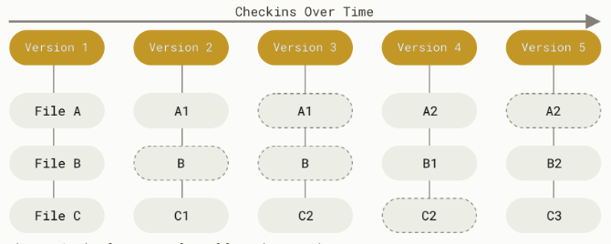
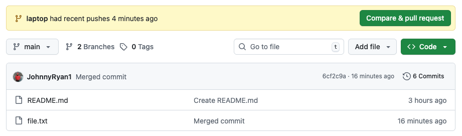
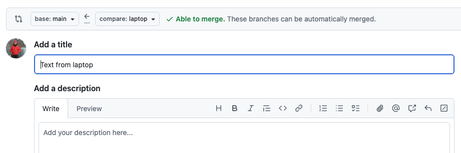
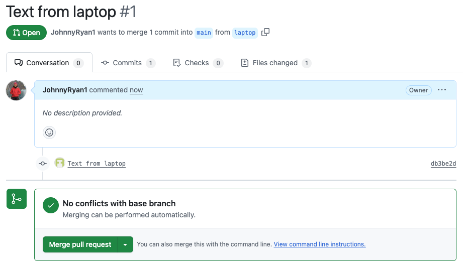
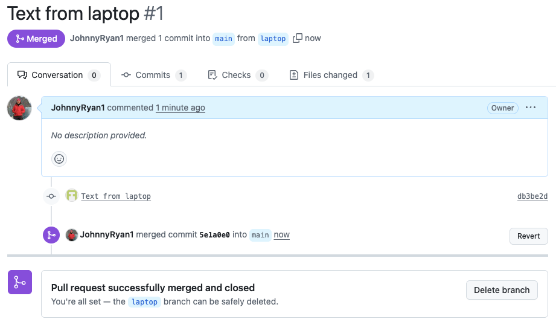

Code management and collaboration#
In this demo, we will learn about using version control to collaborate on programming projects.

We’ve all been in this situation before: it seems unnecessary to have multiple nearly-identical versions of the same document. But we do this because we’re afraid we will delete something that may turn out to be useful.
It becomes even more complex when writing collaboratively with traditional word processors (e.g. MS word). One option would be to require every collaborator to work on the document sequentially (slowing down the process of writing).
Alternatively, we could receive comments from all collaborators at the same time (i.e. parallel) and manually merge their edits into our document. But this is time-consuming, prone to errors, and makes it challenging to resolve conflicting edits.
The track changes feature in modern word processors can be useful for highlighting changes and simplifying the merging process. But, once we have accepted their changes, we no longer know who suggested the change, why it was suggested, or when it was merged into the rest of the document.
Version control#
Version control systems (VCS) start with a base version of the document and then keeps track of changes you make each step of the way
VCS does not care about file names, instead it records who, what, when, and why changes were made to files
VCS allows us to undo changes at any time by reverting to a previous version of the files
A central location where we manage our files using VCS is called a repository

Git#
One of the most popular VCS tools in use today is called
gitdeveloped in 2005 by Linus TorvaldsIt is a command-line interface (CLI) tool that is installed locally
It is free and open-source software

GitHub#
GitHub is a web-based hosting service for
gitowned by Microsoft

Provides remote backup for our repository (i.e. in the cloud), a graphical user interface (GUI), and many other features that encourage sharing and collaboration
There are other web-based hosting services (e.g. GitLab and Bitbucket)
We can use git and GitHub together as a form of distributed version control (DVCS), where a full mirror of our repository (including its history) is stored in multiple places and our collaborators all have access to the central repository.
{kind=link}
Single user workflow#
Install git using the following instructions
Open terminal and set user name and email address.
% git config --global user.name "Johnny Ryan"
% git config --global user.email jonathan.ryan@duke.edu
Set default branch name to main.
% git config --global init.defaultBranch main
Initialize a repository#
Make a new folder with a text file.
% mkdir my_project
% cd my_project
% echo "This is the content of my file." > file.txt
Initialize git in repository.
% git init
Initialized empty Git repository in /Users/jr555/Documents/my_project/.git/
% ls -la
total 16
drwxr-xr-x 5 jr555 staff 160 Oct 16 10:35 .
drwx------+ 6 jr555 staff 192 Oct 15 12:29 ..
drwxr-xr-x 15 jr555 staff 480 Oct 16 10:36 .git
-rw-r--r--@ 1 jr555 staff 43 Oct 16 10:35 file.txt
At this point our repository contains all the necessary files but no version control is happening yet. We can confirm this by checking the status of our files.
% git status
On branch main
No commits yet
Untracked files:
(use "git add <file>..." to include in what will be committed)
file.txt
nothing added to commit but untracked files present (use "git add" to track)
We use a two-step process to start tracking changes to our file. We first define the files we want to track using git add.
% git add .
On branch main
No commits yet
Changes to be committed:
(use "git rm --cached <file>..." to unstage)
new file: file.txt
Note
The . tells git to stage all changes to all files in the repository.
We then use git commit to begin tracking our files.
% git commit -m "initial commit"
[main (root-commit) e829ea6] initial commit
1 file changed, 1 insertion(+)
create mode 100644 file.txt
Note
The -m is a message that we use to briefly describe what the changes were.
% git status
On branch main
nothing to commit, working tree clean
Note
nothing to commit, working tree clean means that none of our tracked files are modified.
Modify repository#
Let’s add another file to our project to see what happens.
% echo "# My Project" > README.md
We will also make some changes to file.txt so that it now reads This is the content of my file **with edits.**. Now when we run git status we see there are two files, one file that is modified and one file that is untracked.
% git status
On branch main
Changes not staged for commit:
(use "git add <file>..." to update what will be committed)
(use "git restore <file>..." to discard changes in working directory)
modified: file.txt
Untracked files:
(use "git add <file>..." to include in what will be committed)
README.md
no changes added to commit (use "git add" and/or "git commit -a")
Both these files can be staged using the git add command which stages all addition, modification, or deletion of files. We can therefore use the same workflow every time.
% git add .
% git status
On branch main
Changes to be committed:
(use "git restore --staged <file>..." to unstage)
new file: README.md
modified: file.txt
We can then use git commit to track them.
% git commit -m "added README"
[main 4a5bbcb] added README
2 files changed, 2 insertions(+), 1 deletion(-)
create mode 100644 README.md
We can inspect the history of our repository using git log.
% git log
commit 4a5bbcb4aae1d50bcec4abbd448cc8e4aebc8a15 (HEAD -> main)
Author: Johnny Ryan <jonathan.ryan@duke.edu>
Date: Thu Oct 16 10:48:48 2025 -0400
added README
commit e829ea674e5563626ce44015a71454d4aedca51b
Author: Johnny Ryan <jonathan.ryan@duke.edu>
Date: Thu Oct 16 10:45:12 2025 -0400
initial commit
This command lists the commits in reverse chronological order (newest commits first) and includes the author’s name, email, date written, and message.
The commit is named using a type of checksum called a SHA-1 hash which is a 40-character string composed of hexadecimal characters (0–9 and a–f).
Tip
Adding the -a option to the git commit command makes Git automatically stage every file that is already tracked before doing the commit, letting you skip the git add part e.g. git commit -a -m "some more changes"
Knowledge check#
Now that we have seen how git works, let’s take a second to understand what it is doing “under-the-hood”. It is important to note that git is not just storing a list of file-based changes (i.e. delta-based version control). Instead, it is recording a series of snapshots of our repository. Every time we commit, we are taking a picture of the current state of files.
{kind=link}
Files in a git repository have three states:
Modified means that we have changed the file but have not staged or committed it to the repository.
Staged means that we have marked a modified file in its current version to be committed into the next snapshot.
Committed means that our file is safely recorded and stored.
Going back in time#
If we want to go back to a previous commit (just to look around) we can use git checkout.
% git checkout e829ea674e5563626ce44015a71454d4aedca51b
Note: switching to 'e829ea674e5563626ce44015a71454d4aedca51b'.
You are in 'detached HEAD' state. You can look around, make experimental
changes and commit them, and you can discard any commits you make in this
state without impacting any branches by switching back to a branch.
If you want to create a new branch to retain commits you create, you may
do so (now or later) by using -c with the switch command. Example:
git switch -c <new-branch-name>
Or undo this operation with:
git switch -
Turn off this advice by setting config variable advice.detachedHead to false
HEAD is now at e829ea6 initial commit
% ls
file.txt
From here we can save the old file somewhere else before going back to the main branch using git checkout main.
% git checkout main
Previous HEAD position was e829ea6 initial commit
Switched to branch 'main'
% ls
README.md file.txt
If we made changes to a file that we later decide we don’t want, we can undo them using git restore (provided that we have not yet committed them).
% open README.md
% git status
On branch main
Changes not staged for commit:
(use "git add <file>..." to update what will be committed)
(use "git restore <file>..." to discard changes in working directory)
modified: README.md
no changes added to commit (use "git add" and/or "git commit -a")
% git restore README.md
% git status
On branch main
nothing to commit, working tree clean
We can also use git restore to unstage a file.
% open README.md
% git add README.md
% git status
On branch main
Changes to be committed:
(use "git restore --staged <file>..." to unstage)
modified: README.md
% git restore --staged README.md
On branch main
Changes not staged for commit:
(use "git add <file>..." to update what will be committed)
(use "git restore <file>..." to discard changes in working directory)
modified: README.md
no changes added to commit (use "git add" and/or "git commit -a")
% git restore README.md
% git status
On branch main
nothing to commit, working tree clean
If we want to reset our repository to a previous commit, we can use git reset.
% git reset --hard e829ea674e5563626ce44015a71454d4aedca51b
HEAD is now at e829ea6 initial commit
$ ls
file.txt
Warning
The git reset command is very dangerous. It completely rewinds our repository to that commit and all changes after that commit are permanently deleted! Be careful with this command.
Working with remotes#
Remote repositories are versions of our project that are hosted somewhere else (usually on GitHub). To set up a remote repository, first go to GitHub.com and click New.
Choose a name for the new repository, leave everything else blank, and click Create Repository. Then back in Terminal, run:
% git remote add origin git@github.com:JohnnyRyan1/my_project.git
% git remote -v
origin git@github.com:JohnnyRyan1/my_project.git (fetch)
origin git@github.com:JohnnyRyan1/my_project.git (push)
This links our local repository with our remote repository. We can then upload our local repository to the remote using git push.
% git push -u origin main
Enumerating objects: 3, done.
Counting objects: 100% (3/3), done.
Writing objects: 100% (3/3), 248 bytes | 248.00 KiB/s, done.
Total 3 (delta 0), reused 0 (delta 0), pack-reused 0
To github.com:JohnnyRyan1/my_project.git
* [new branch] main -> main
branch 'main' set up to track 'origin/main'.
Note
The first time we use this command we have to include -u origin main to define which branch we want to upload to (i.e. the main branch of our remote repository called origin.
{kind=link}
Our remote repository now contains file.txt. But since we used reset earlier, we lost our README.md file. We can make one on GitHub.
{kind=link}
We can run git fetch now to compare our local repository with our remote repository and download the new commits from the remote. Note that this command does not modify our local repository.
% git fetch
remote: Enumerating objects: 4, done.
remote: Counting objects: 100% (4/4), done.
remote: Compressing objects: 100% (2/2), done.
remote: Total 3 (delta 0), reused 0 (delta 0), pack-reused 0 (from 0)
Unpacking objects: 100% (3/3), 937 bytes | 937.00 KiB/s, done.
From github.com:JohnnyRyan1/my_project
e829ea6..b3eb2b2 main -> origin/main
After running git status, we find that our local repository is 1 commit behind the remote repository. We can use git pull to merge the remote commits into our local repository.
% git status
On branch main
Your branch is behind 'origin/main' by 1 commit, and can be fast-forwarded.
(use "git pull" to update your local branch)
nothing to commit, working tree clean
% git pull
Updating e829ea6..b3eb2b2
Fast-forward
README.md | 1 +
1 file changed, 1 insertion(+)
create mode 100644 README.md
Note
The phrase “fast-forward” means that the commit in the remote repository was directly ahead of the commit in the local repository, so Git simply moves the pointer forward.
Now when we run git status, we have a third line that tells us that we are not only on branch main but also that our repository is up to date with origin/main, the remote repository.
% git status
On branch main
Your branch is up to date with 'origin/main'.
nothing to commit, working tree clean
Centralized workflow for teams#
One team member creates a remote repository. All team members clone this central repository to their local machine.

One team member makes changes (e.g. add, modify, delete) to files on their local machine, periodically committing these changes (i.e. take a snapshot)
When they are finished working, they can push their changes back to the central repository

But now when another team member (who has also been working on the project) tries to push their changes, Git will refuse the request because the their local history has diverged from the central repository

The team member must first pull the most recent changes in the central reposistory into their local repository

The team member then resolves any conflicts between their local version and the central repository.
Once finished, then team member can then commit and push their changes to the central repo

Advantages#
Simplest workflow
Works well for small teams
Disadvantages#
If someone breaks the central repo, it breaks for everyone
Potential for a lot of conflicts
One solution is to avoid working on the same files
But this does not scale well as teams increase in size
Branch workflow for single user#
The logical extension of the centralized workflow is to use branches
In this workflow, all feature development takes place in a dedicated branch instead of the main repository
This means that main branch never contains broken code - a huge advantage for continuous integration environments
Let’s demonstrate branching by continuing to work on my_project folder.
Create new branch#
We will first create a new branch called testing.
git branch testing
{kind=link}
We then switch to that branch using git checkout
% git checkout testing
Switched to branch 'testing'
Note
This can be done in one line using git checkout -b testing which both creates the branch and switches to it.

Basic branching#
Now we make a change to file.txt and commit it.
% open file.txt
% git commit -a -m "Made a change"
[testing f1c1c74] Made a change
1 file changed, 1 insertion(+), 1 deletion(-)
{kind=link}
We find that our testing branch has moved forward but our main branch still points to the commit we were on before we switched to the new branch. We can go back to the main branch using git checkout main which does two things: 1) switches the working directory to the main branch and 2) undoes the changes we made in the testing branch.
{kind=link}
% git checkout main
Switched to branch 'main'
Your branch is up to date with 'origin/main'.
We can merge the testing branch with the main branch using git merge.
% git merge testing
Updating b3eb2b2..f1c1c74
Fast-forward
file.txt | 2 +-
1 file changed, 1 insertion(+), 1 deletion(-)
And we can push those new changes to our remote repository.
% git status
On branch main
Your branch is ahead of 'origin/main' by 1 commit.
(use "git push" to publish your local commits)
nothing to commit, working tree clean
% git push
Enumerating objects: 5, done.
Counting objects: 100% (5/5), done.
Delta compression using up to 10 threads
Compressing objects: 100% (2/2), done.
Writing objects: 100% (3/3), 325 bytes | 325.00 KiB/s, done.
Total 3 (delta 0), reused 0 (delta 0), pack-reused 0
To github.com:JohnnyRyan1/my_project.git
b3eb2b2..f1c1c74 main -> main
We should now delete the testing branch.
% git branch -d testing
Deleted branch testing (was f1c1c74).
Merging conflicts#
Sometimes the merge does not go smoothly. For example, if we made committed different changes to the same file in both main and testing repositories, we would have a conflict that git would not be able resolve automatically.
% git checkout -b testing
Switched to a new branch 'testing'
% open file.txt
% git commit -a -m "Added a new line"
[testing d7686d8] Added a new line
1 file changed, 2 insertions(+)
% git checkout main
Switched to branch 'main'
Your branch is up to date with 'origin/main'.
% open file.txt
% git commit -a -m "Added more text"
[main 0be9124] Added more text
1 file changed, 1 insertion(+), 1 deletion(-)
When we run git merge, we get a conflict message. Instead of creating a new merge commit, git paused the process until we are able to resolve the conflict.
% git merge testing
Auto-merging file.txt
CONFLICT (content): Merge conflict in file.txt
Automatic merge failed; fix conflicts and then commit the result.
We can run git status to see which files are unmerged.
% git status
On branch main
Your branch is ahead of 'origin/main' by 1 commit.
(use "git push" to publish your local commits)
You have unmerged paths.
(fix conflicts and run "git commit")
(use "git merge --abort" to abort the merge)
Unmerged paths:
(use "git add <file>..." to mark resolution)
both modified: file.txt
no changes added to commit (use "git add" and/or "git commit -a")
We can manually resolve this conflict using git mergetool. We have setup our system to use Xcode’s FileMerge graphical tool to do this.
{kind=link}
Once we finished resolving conflicts, we save the file. We can run git status again to confirm that the conflicts have been resolved.
% git status
On branch main
Your branch is ahead of 'origin/main' by 1 commit.
(use "git push" to publish your local commits)
All conflicts fixed but you are still merging.
(use "git commit" to conclude merge)
Changes to be committed:
modified: file.txt
Untracked files:
(use "git add <file>..." to include in what will be committed)
file.txt.orig
% git commit -a -m "Merged commit"
[main 6cf2c9a] Merged commit
% git log
commit 6cf2c9a45a83aa1c1a93c5f9466353ed5b31a878 (HEAD -> main)
Merge: 87d1c58 92010d5
Author: Johnny Ryan <jonathan.ryan@duke.edu>
Date: Thu Oct 16 14:29:29 2025 -0400
Merged commit
commit 87d1c58eedb0811286c36ae8be17f9e211c6a496
Author: Johnny Ryan <jonathan.ryan@duke.edu>
Date: Thu Oct 16 14:21:51 2025 -0400
Added more text
commit 92010d5fdf347807345dc36ea2f2e868fee88de0 (testing)
Author: Johnny Ryan <jonathan.ryan@duke.edu>
Date: Thu Oct 16 14:21:26 2025 -0400
Added a new line
Branch workflow for teams#
All team members clone a single, central repository to their local machine.
% git clone git@github.com:JohnnyRyan1/my_project.git
Cloning into 'my_project'...
remote: Enumerating objects: 18, done.
remote: Counting objects: 100% (18/18), done.
remote: Compressing objects: 100% (12/12), done.
remote: Total 18 (delta 2), reused 15 (delta 2), pack-reused 0 (from 0)
Receiving objects: 100% (18/18), done.
Resolving deltas: 100% (2/2), done.
Team members immediately create a new branch.
% git checkout -b laptop
Switched to a new branch 'laptop'
% open file.txt

Team members work on the code, staying on their branch. When they finish, they commit them to their branch and push it to the remote repository. The remote repository will now contain multiple branches.
% git commit -a -m "Text from laptop"
[laptop db3be2d] Text from laptop
1 file changed, 2 insertions(+)
% git push --set-upstream origin laptop
Enumerating objects: 5, done.
Counting objects: 100% (5/5), done.
Delta compression using up to 8 threads
Compressing objects: 100% (3/3), done.
Writing objects: 100% (3/3), 368 bytes | 368.00 KiB/s, done.
Total 3 (delta 0), reused 0 (delta 0), pack-reused 0
remote:
remote: Create a pull request for 'laptop' on GitHub by visiting:
remote: https://github.com/JohnnyRyan1/my_project/pull/new/laptop
remote:
To github.com:JohnnyRyan1/my_project.git
* [new branch] laptop -> laptop
branch 'laptop' set up to track 'origin/laptop'.

{kind=link}
Team leader reviews pull request, discusses any changes with team members.
 {kind=link}
{kind=link}
Once everything looks good, team leader merges new feature into main codebase. Team member can then delete their branch.
{kind=link}
Team leader can then pull the changes from the remote GitHub repository to their local repository.
% git pull
remote: Enumerating objects: 6, done.
remote: Counting objects: 100% (6/6), done.
remote: Compressing objects: 100% (4/4), done.
remote: Total 4 (delta 0), reused 3 (delta 0), pack-reused 0 (from 0)
Unpacking objects: 100% (4/4), 1.20 KiB | 307.00 KiB/s, done.
From github.com:JohnnyRyan1/my_project
6cf2c9a..5e1a0e0 main -> origin/main
Updating 6cf2c9a..5e1a0e0
Fast-forward
file.txt | 2 ++
1 file changed, 2 insertions(+)
Advantages of branch workflow#
Promotes collaboration with team members through pull requests and merge reviews
Teams can work in parallel on same files so good approach for larger teams
Main branch never contains broken code
Guiding framework for other, more complex workflows
Good practices#
Agree on a workflow#
It is important that teams establish shared patterns of collaboration
If a team doesn’t agree on a shared workflow it can lead to inefficient communication when it comes time to merge branches
Commit often#
Commits are easy to make and provide opportunities to revert or undo work
They should be made frequently to capture updates to a code base
Ensure you’re working from latest version#
VCS enables rapid updates from multiple developers
It’s easy to have a local copy of the codebase fall behind the global copy
Make sure to
git fetchorpullthe latest code before you start working on project
Make detailed notes#
It is important to leave descriptive explanatory commit log messages. These commit log messages should explain the “why” and “what” that encompass the commits content.
These log messages become the canonical history of the project’s development and leave a trail for future contributors to review.
Use branches#
Branches enable multiple developers to work in parallel on separate lines of development
Branches should be used frequently (e.g. multiple times per day) as they are quick and inexpensive.
When development on a branch is complete it should be merged into the main line of development and then deleted
Summary#
Security#
VCS acts like an unlimited ‘undo’ thereby protecting source code from yourself and others
e.g. catastrophe, human error, and unintended consequences

Collaboration#
VCS enables many people to work on the same project at the same time
Teams working in parallel accelerates project development
Community#
Impossible for junior developer to mess up a big project
Since it is so robust this encourages open-source experimentation and development
GitHubhas emerged as the industry standard

Challenges#
Can be difficult to learn